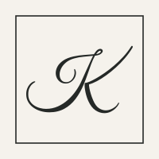
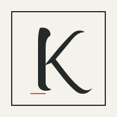
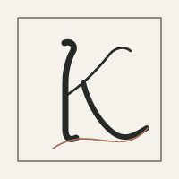
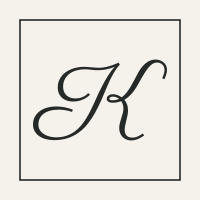
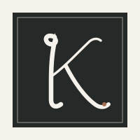
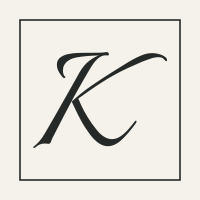
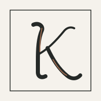
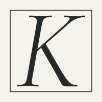
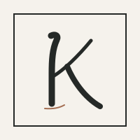
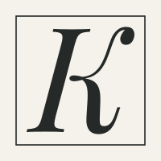

MONOGRAM EXPLORATION / 01
Ten ways to write K.
Ten calligraphic directions for the square Kozak Lab mark. The large view shows the character of each stroke; the small square tests whether it survives in a header or favicon. These are comparisons only—the current site logo stays as it is until one is chosen.



















Every option is a self-contained SVG drawn for this study, with no external font or image dependency. Pick a number to refine; colour, frame weight, and stroke can still change.